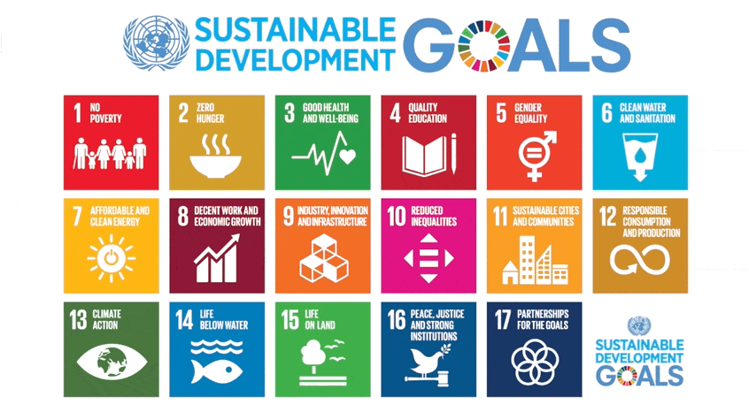
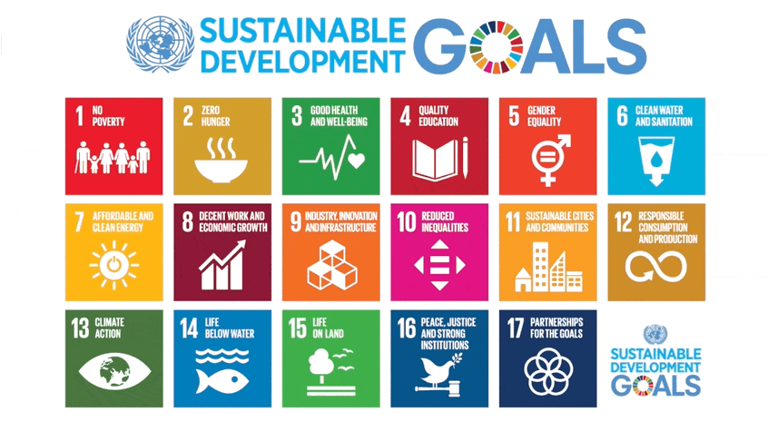

Welcome to Our Zero Hunger Initiative
In a world capable of producing enough food for everyone, nearly 690 million people still go to
bed hungry every night. The challenge of eradicating hunger has never been more urgent. Zero
Hunger, one of the United Nations’ Sustainable Development Goals (SDG 2), envisions a world
where everyone has access to sufficient, nutritious food all year round.
Achieving Zero Hunger is not just about feeding the world; it's about promoting sustainable
agricultural practices, ensuring fair access to resources, reducing food waste, and supporting
farmers in vulnerable regions. By working together, we can create a world where hunger is a
thing of the past and sustainable farming helps safeguard the future of our planet.
Join the movement to end hunger, improve food security, and foster a healthier planet for
generations to come. Together, we can build a better future—one where no one goes hungry.

Sustainable Agriculture
Our food systems are deeply linked to the environment. Here's how sustainable agriculture can help tackle hunger:
- Organic farming minimizes harmful chemicals.
- Water conservation techniques preserve our water resources.
- Agroforestry integrates trees into farming systems.
- Crop rotation enhances soil fertility naturally.

Reducing Hunger Globally
Hunger affects millions, but with the right strategies, we can reduce its impact significantly:
Click hereTargets of Hunger
Feedback
We hope that through this webpage everyone of you learned and will take measures to promote zero hunger,